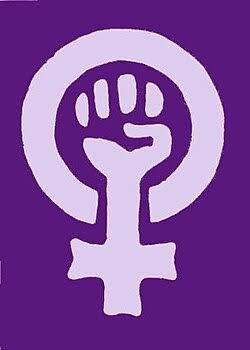

Historia y evolución del movimiento feminista
El feminismo ha atravesado diferentes etapas a lo largo de la historia. Sus reivindicaciones fueron cambiando según las necesidades
y las desigualdades que enfrentaban las mujeres en cada época.
Aunque existieron mujeres que defendieron sus derechos mucho antes de que se consolidara el movimiento, su desarrollo histórico
suele organizarse en distintas etapas conocidas como olas del feminismo.
Primera ola: derechos civiles y políticos
Siglos XVIII y XIX y comienzos del siglo XX.
Durante esta etapa, las principales demandas estuvieron relacionadas con el reconocimiento de los derechos fundamentales de las
mujeres. Se exigía el acceso a la educación, el derecho a la propiedad, la igualdad ante la ley y, especialmente, el derecho al voto.
Uno de los movimientos más importantes de este período fue el sufragismo, que reunió a mujeres que lucharon para conseguir la
participación femenina en las elecciones y en la vida política.
Segunda ola: igualdad social y laboral
Décadas de 1960 y 1970.
En esta etapa, las reivindicaciones se ampliaron hacia otros aspectos de la vida cotidiana. Además de los derechos legales y políticos,
se comenzó a cuestionar la desigualdad dentro de las familias, la discriminación laboral, los roles tradicionales de género y la falta de
oportunidades para las mujeres.
También se impulsaron debates sobre la autonomía, la participación social y la distribución de las responsabilidades domésticas.
Tercera ola: diversidad e inclusión
Década de 1990 y comienzos del siglo XXI.
Esta etapa destacó la diversidad de experiencias de las mujeres y señaló que no todas enfrentan las mismas dificultades. Se prestó mayor
atención a factores como la situación económica, el origen étnico, la cultura y el contexto social.
También se cuestionó la idea de que existiera una única forma de ser mujer y se promovió una visión más amplia e inclusiva del feminismo.
Cuarta ola: activismo digital y lucha contra la violencia
Década de 2010 hasta la actualidad.
Esta etapa se caracteriza por el uso de internet y las redes sociales como herramientas para difundir información, denunciar situaciones de
discriminación y organizar movilizaciones.
Se destacan campañas internacionales contra el acoso y la violencia de género, así como la búsqueda de mayor igualdad y representación en
diferentes espacios de la sociedad.
Aunque esta división en cuatro olas es una forma habitual de explicar la historia del movimiento, sus etapas no fueron iguales en todos los países y muchas luchas se desarrollaron simultáneamente.
